<title>Informe Mesa de Ayuda TI</title>
<meta name="claude:viewport-fit-sides" content="cover">
<link id="fuente-letra" rel="stylesheet" href="https://fonts.googleapis.com/css2?family=Carlito:ital,wght@0,400;0,700;1,400&display=swap">
<style id="estilo">/* Hoja de documento centrada sobre fondo neutro; todo en Calibri 12 pt, títulos en negrita con escala fija. */
:root {
  --papel: #ffffff;
  --fondo: #eef1f5;
  --tinta: #1e2733;
  --tinta-suave: #556170;
  --linea: #d3dae3;
  --marca: #1d3f66;
  --marca-suave: #e6edf6;
  --verde: #23704a;
  --verde-fondo: #e7f4ec;
  --rojo: #a52a22;
  --rojo-fondo: #fbeceb;
  --ambar: #8a5a00;
  --ambar-fondo: #fdf3dd;
  --sombra: 0 1px 3px rgba(20, 35, 60, .10);
  --letra: Calibri, Carlito, "Segoe UI", Arial, sans-serif;
}
@media (prefers-color-scheme: dark) {
  :root:not([data-theme="light"]) {
    color-scheme: dark;
    --papel: #1b222c; --fondo: #11161d; --tinta: #e3e8ef; --tinta-suave: #a3afbe; --linea: #344050;
    --marca: #9cc0ea; --marca-suave: #22324a; --verde: #7ccf9f; --verde-fondo: #1b3328;
    --rojo: #f19a92; --rojo-fondo: #3a2120; --ambar: #e8c06e; --ambar-fondo: #3a2f17;
    --sombra: 0 1px 3px rgba(0, 0, 0, .4);
  }
}
:root[data-theme="dark"] {
  color-scheme: dark;
  --papel: #1b222c; --fondo: #11161d; --tinta: #e3e8ef; --tinta-suave: #a3afbe; --linea: #344050;
  --marca: #9cc0ea; --marca-suave: #22324a; --verde: #7ccf9f; --verde-fondo: #1b3328;
  --rojo: #f19a92; --rojo-fondo: #3a2120; --ambar: #e8c06e; --ambar-fondo: #3a2f17;
  --sombra: 0 1px 3px rgba(0, 0, 0, .4);
}

body {
  background: var(--fondo);
  color: var(--tinta);
  font-family: var(--letra);
  font-size: 12pt;
  line-height: 1.5;
  padding-left: max(16px, env(safe-area-inset-left, 0px));
  padding-right: max(16px, env(safe-area-inset-right, 0px));
  padding-block: 24px 96px;
}
#doc {
  max-width: 860px;
  margin: 0 auto;
  background: var(--papel);
  box-shadow: var(--sombra);
  border: 1px solid var(--linea);
  padding: 48px clamp(18px, 6vw, 72px) 56px;
}
#doc:focus { outline: none; }
body.editando #doc { outline: 2px dashed var(--marca); outline-offset: 4px; }

h1, h2, h3, h4 { font-family: var(--letra); color: var(--marca); text-wrap: balance; line-height: 1.25; }
h1 { font-size: 20pt; margin: 0 0 8px; }
h2 { font-size: 16pt; margin: 40px 0 12px; padding-bottom: 6px; border-bottom: 1px solid var(--linea); }
h3 { font-size: 13pt; margin: 26px 0 8px; }
h4 { font-size: 12pt; margin: 18px 0 6px; color: var(--tinta); }
p, li { font-size: 12pt; }
p { margin: 0 0 10px; }
ul, ol { margin: 0 0 12px; padding-left: 24px; }
li { margin-bottom: 4px; }
a { color: var(--marca); }
code { font-family: Consolas, "Courier New", monospace; font-size: 11pt; background: var(--marca-suave); padding: 0 4px; border-radius: 3px; }
strong { color: inherit; }

/* Portada */
.portada { text-align: center; padding: 30px 0 34px; border-bottom: 2px solid var(--marca); margin-bottom: 26px; }
.portada .institucion { font-size: 12pt; letter-spacing: .06em; text-transform: uppercase; color: var(--tinta-suave); margin-bottom: 26px; }
.portada h1 { font-size: 24pt; margin-bottom: 6px; }
.portada .subtitulo { font-size: 14pt; color: var(--tinta-suave); margin-bottom: 34px; }
.portada dl { display: inline-grid; grid-template-columns: auto auto; gap: 4px 16px; text-align: left; margin: 0; }
.portada dt { font-weight: bold; }
.portada dd { margin: 0; }

.indice ol { columns: 2 260px; column-gap: 32px; }
.indice li { break-inside: avoid; }

/* Tablas */
.tabla { overflow-x: auto; margin: 10px 0 16px; }
table { width: 100%; border-collapse: collapse; font-size: 12pt; }
th, td { border: 1px solid var(--linea); padding: 6px 9px; text-align: left; vertical-align: top; }
th { background: var(--marca-suave); color: var(--tinta); font-weight: bold; }
td.num, th.num { text-align: center; font-variant-numeric: tabular-nums; }
table.ficha th { width: 30%; }

.estado { display: inline-block; padding: 0 8px; border-radius: 10px; font-weight: bold; white-space: nowrap; }
.paso { color: var(--verde); background: var(--verde-fondo); }
.fallo { color: var(--rojo); background: var(--rojo-fondo); }

.nota { background: var(--ambar-fondo); color: var(--tinta); border-left: 4px solid var(--ambar); padding: 10px 14px; margin: 12px 0 16px; }
.nota p:last-child { margin-bottom: 0; }
.pendiente { background: var(--ambar-fondo); color: var(--ambar); padding: 0 4px; border-radius: 3px; }

figure { margin: 16px 0 22px; }
figure img { display: block; max-width: 100%; height: auto; border: 1px solid var(--linea); }
figcaption { font-size: 12pt; color: var(--tinta-suave); margin-top: 6px; }
body.editando figure img { cursor: pointer; }
body.editando figure img:hover { outline: 3px solid var(--marca); }

.prompt { border: 1px solid var(--linea); background: var(--fondo); padding: 10px 14px; margin: 8px 0 14px; white-space: pre-wrap; }

/* Barra de edición (la crea el script; no forma parte del documento guardado) */
.herramientas {
  position: fixed; left: 0; right: 0; bottom: 0; z-index: 20;
  background: var(--papel); border-top: 1px solid var(--linea); box-shadow: 0 -2px 8px rgba(20, 35, 60, .10);
  padding: 8px max(16px, env(safe-area-inset-right, 0px)) calc(8px + env(safe-area-inset-bottom, 0px)) max(16px, env(safe-area-inset-left, 0px));
  display: flex; flex-wrap: wrap; gap: 6px; align-items: center; justify-content: center;
  font-family: var(--letra); font-size: 12pt;
}
.herramientas button {
  font-family: var(--letra); font-size: 12pt; padding: 5px 12px; border-radius: 4px; cursor: pointer;
  border: 1px solid var(--marca); background: var(--papel); color: var(--marca);
}
.herramientas button.principal { background: var(--marca); color: var(--papel); }
.herramientas button:focus-visible { outline: 2px solid var(--marca); outline-offset: 2px; }
.herramientas .grupo { display: flex; flex-wrap: wrap; gap: 6px; }
.herramientas .estado-guardado { color: var(--tinta-suave); margin-left: 6px; }
.aviso-borrador { max-width: 860px; margin: 0 auto 12px; background: var(--ambar-fondo); border: 1px solid var(--ambar); padding: 8px 14px; display: flex; gap: 10px; flex-wrap: wrap; align-items: center; }

@media (max-width: 520px) {
  #doc { padding-top: 28px; }
  .portada h1 { font-size: 20pt; }
}
@media (prefers-reduced-motion: reduce) { * { scroll-behavior: auto !important; } }
</style>
<article id="doc">

<section class="portada">
  <div class="institucion">Ingeniería de Software I</div>
  <h1>Sistema de gestión de solicitudes de soporte técnico</h1>
  <div class="subtitulo">Informe técnico final del proyecto</div>
  <dl>
    <dt>Integrantes</dt><dd>Jaider Ramos · <span class="pendiente">[Nombre del integrante 2]</span> · <span class="pendiente">[Nombre del integrante 3]</span></dd>
    <dt>Docente</dt><dd><span class="pendiente">[Nombre del docente]</span></dd>
    <dt>Institución</dt><dd><span class="pendiente">[Universidad / Facultad]</span></dd>
    <dt>Módulo implementado</dt><dd>Módulo de Tickets</dd>
    <dt>Repositorio</dt><dd><span class="pendiente">[Pegar aquí el enlace de GitHub]</span></dd>
    <dt>Fecha</dt><dd>Octubre de 2026</dd>
  </dl>
</section>

<section class="indice">
  <h2>Contenido</h2>
  <ol>
    <li><a href="#introduccion">Introducción</a></li>
    <li><a href="#solucion">Descripción de la solución</a></li>
    <li><a href="#modularidad">Modularidad y componentes</a></li>
    <li><a href="#pruebas">Casos de prueba, resultados y defectos</a></li>
    <li><a href="#mantenimiento">Mantenimiento y evolución</a></li>
    <li><a href="#git-ia">Git y uso de inteligencia artificial</a></li>
    <li><a href="#conclusiones">Conclusiones</a></li>
    <li><a href="#repositorio">Enlace al repositorio</a></li>
    <li><a href="#anexos">Anexos</a></li>
  </ol>
</section>

<h2 id="introduccion">1. Introducción</h2>
<p>La unidad de soporte tecnológico de la organización recibe solicitudes por correo, teléfono y mensajes, sin un lugar único donde registrarlas. Esto provoca solicitudes olvidadas, asignaciones poco claras y ninguna forma de saber cuánto tarda la atención.</p>
<p>Este proyecto propone una aplicación web donde cada solicitud se convierte en un <strong>ticket</strong> con un código único. El ticket se clasifica, se asigna a un técnico, avanza por estados definidos y deja un historial completo de lo que pasó con él.</p>
<p>El trabajo se centró en cuatro actividades pedidas por el docente: dividir el sistema en componentes, probar el software, analizar solicitudes de cambio y manejar el código con Git apoyándonos en una herramienta de inteligencia artificial. Como lo indica el enunciado, se implementó un único módulo: el <strong>Módulo de Tickets</strong>, que es el corazón del sistema. Los demás módulos quedan documentados.</p>

<h3>Objetivos</h3>
<ul>
  <li>Proponer una división del sistema en componentes con responsabilidades claras.</li>
  <li>Implementar el Módulo de Tickets cumpliendo las reglas de negocio RN-01 a RN-12.</li>
  <li>Definir y ejecutar al menos 12 casos de prueba, registrando defectos y correcciones.</li>
  <li>Analizar las solicitudes de cambio SC-01, SC-02 y SC-03.</li>
  <li>Trabajar con ramas, commits y merges en Git, y documentar el uso de la IA.</li>
</ul>

<h2 id="solucion">2. Descripción de la solución</h2>
<p>La solución es una aplicación web en español que se usa desde el navegador (Chrome, Edge o Firefox). Cada persona entra con su correo y contraseña, y lo que puede ver o hacer depende de su rol.</p>

<h3>2.1 Roles del sistema</h3>
<div class="tabla"><table>
  <thead><tr><th>Rol</th><th>Qué puede hacer en el Módulo de Tickets</th></tr></thead>
  <tbody>
    <tr><td>Solicitante</td><td>Registrar tickets, consultar solo los suyos, agregar información mientras estén abiertos, cancelar los que estén en estado Nuevo, cerrar o reabrir los resueltos.</td></tr>
    <tr><td>Técnico</td><td>Consultar y filtrar tickets, cambiar el estado de los que tiene asignados, registrar comentarios y marcar como resuelto describiendo la solución.</td></tr>
    <tr><td>Coordinador</td><td>Consultar y filtrar tickets, asignarlos a técnicos activos, comentar, cerrar o reabrir.</td></tr>
    <tr><td>Administrador</td><td>Lo mismo que el coordinador. Además, en el sistema completo, administra las cuentas (módulo documentado, no implementado).</td></tr>
  </tbody>
</table></div>

<h3>2.2 Ciclo de vida de un ticket</h3>
<p>Los estados y los cambios permitidos son los de las reglas RN-04 y RN-05. El sistema rechaza cualquier otro cambio y deja el ticket como estaba (RN-12).</p>
<div class="tabla"><table>
  <thead><tr><th>Estado actual</th><th>Puede pasar a</th><th>Quién lo hace</th></tr></thead>
  <tbody>
    <tr><td>Nuevo</td><td>Asignado · Cancelado</td><td>Administrador o coordinador (asignar) · Solicitante dueño (cancelar con motivo)</td></tr>
    <tr><td>Asignado</td><td>En progreso</td><td>Técnico asignado</td></tr>
    <tr><td>En progreso</td><td>Pendiente del solicitante · Resuelto</td><td>Técnico asignado (para Resuelto debe describir la solución)</td></tr>
    <tr><td>Pendiente del solicitante</td><td>En progreso · Resuelto</td><td>Técnico asignado</td></tr>
    <tr><td>Resuelto</td><td>Cerrado · En progreso (reabrir)</td><td>Solicitante dueño o gestor. Reabrir solo dentro de los 5 días calendario siguientes</td></tr>
    <tr><td>Cerrado · Cancelado</td><td>Ninguno (estados finales)</td><td>—</td></tr>
  </tbody>
</table></div>

<h3>2.3 Herramientas utilizadas</h3>
<ul>
  <li><strong>Python 3 y Flask:</strong> lenguaje y librería para construir la aplicación web.</li>
  <li><strong>SQLite:</strong> base de datos en un archivo; los datos se conservan al cerrar la sesión o el navegador (RNF-08).</li>
  <li><strong>pytest:</strong> herramienta para ejecutar los casos de prueba automáticamente.</li>
  <li><strong>Git y GitHub:</strong> control de versiones con ramas y merges.</li>
  <li><strong>Claude Code (Anthropic):</strong> asistente de inteligencia artificial usado para generar, revisar y corregir código.</li>
</ul>

<h3>2.4 Recorrido por la aplicación</h3>
<figure>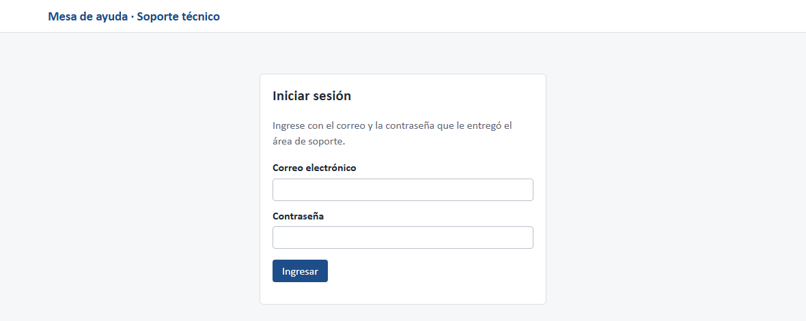<figcaption>Figura 1. Inicio de sesión con correo y contraseña (RF-01).</figcaption></figure>
<figure>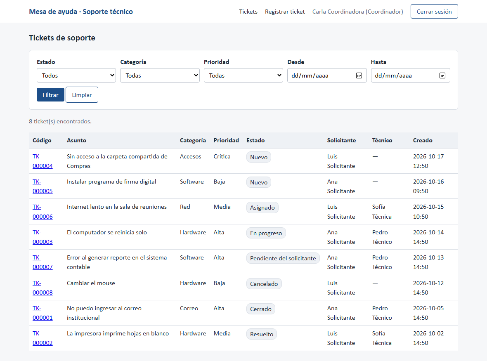<figcaption>Figura 2. Lista de tickets con filtros por estado, categoría, prioridad y fechas, vista por la coordinadora (RF-05).</figcaption></figure>
<figure>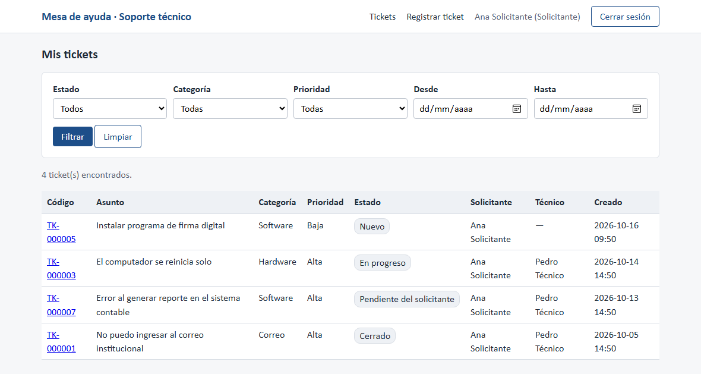<figcaption>Figura 3. La solicitante solo ve sus propios tickets (RF-08, RN-07).</figcaption></figure>
<figure>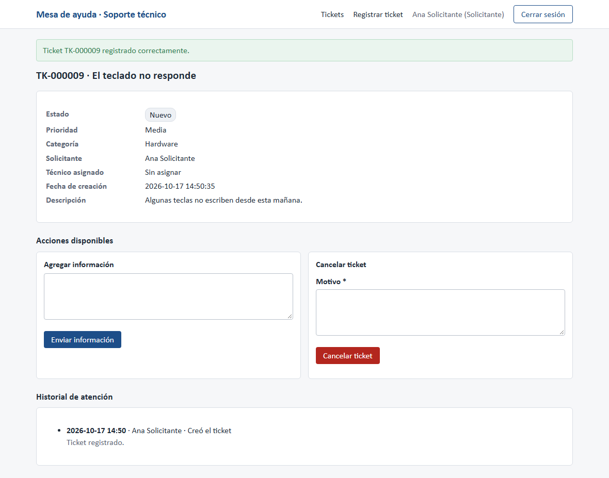<figcaption>Figura 4. Ticket registrado: recibe un código único y queda en estado Nuevo (RF-03, RF-04).</figcaption></figure>
<figure>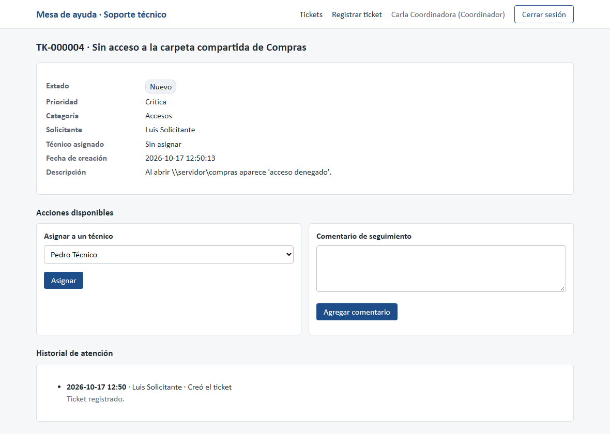<figcaption>Figura 5. La coordinadora ve la opción para asignar el ticket a un técnico activo (RF-06).</figcaption></figure>
<figure>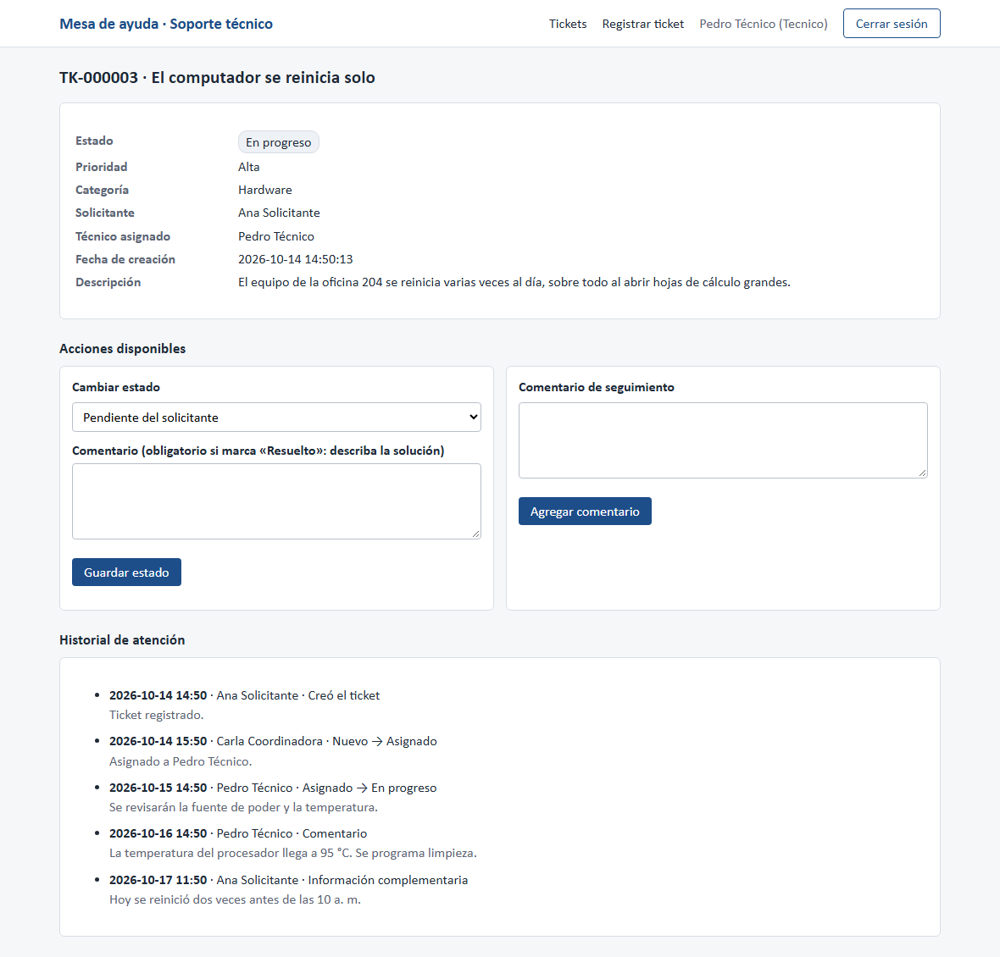<figcaption>Figura 6. El técnico asignado cambia el estado y registra comentarios; abajo aparece el historial de atención (RF-07).</figcaption></figure>
<figure>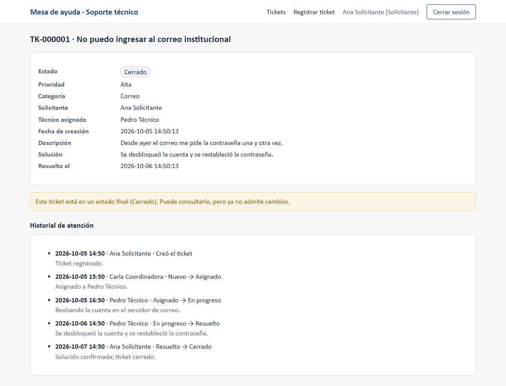<figcaption>Figura 7. Ticket cerrado: ya no admite cambios, pero su historial se conserva (RN-10).</figcaption></figure>

<h2 id="modularidad">3. Modularidad y componentes</h2>
<p>Dividimos el sistema en seis componentes. Cada uno se encarga de una sola parte del problema y se comunica con los demás por medio de operaciones con nombres claros. Así, si cambia una parte, las demás no se ven afectadas.</p>

<h3>3.1 Componentes propuestos</h3>
<div class="tabla"><table>
  <thead><tr><th>Componente</th><th>Responsabilidad</th><th>Operaciones principales</th><th>Datos que usa</th><th>Requisitos</th></tr></thead>
  <tbody>
    <tr><td><strong>C1. Seguridad y sesión</strong></td><td>Verificar quién es el usuario y qué puede hacer según su rol.</td><td>iniciar sesión, cerrar sesión, obtener usuario actual, verificar permiso</td><td>Usuarios (correo, contraseña cifrada, rol, activo)</td><td>RF-01, RF-13, RNF-03, RNF-04, RNF-07</td></tr>
    <tr><td><strong>C2. Usuarios y roles</strong></td><td>Crear, consultar, actualizar y desactivar cuentas; asignar roles.</td><td>crear usuario, editar usuario, desactivar, listar técnicos activos</td><td>Usuarios</td><td>RF-02, RN-11</td></tr>
    <tr><td><strong>C3. Tickets</strong> (implementado)</td><td>Todo el ciclo de vida del ticket: registro, consulta, filtros, asignación, estados, comentarios, cancelación, resolución, reapertura y cierre.</td><td>crear, consultar, listar, asignar, cambiar estado, comentar, complementar, cancelar, reabrir, cerrar</td><td>Tickets, Historial; lee Usuarios</td><td>RF-03 a RF-11, RN-01 a RN-10, RN-12</td></tr>
    <tr><td><strong>C4. Reportes</strong></td><td>Generar reportes de volumen, estado y tiempos de atención.</td><td>reporte por periodo, por categoría, por técnico</td><td>Tickets, Historial (solo lectura)</td><td>RF-12</td></tr>
    <tr><td><strong>C5. Datos y respaldo</strong></td><td>Guardar la información de forma segura, sin cambios a medias, y permitir copias de respaldo.</td><td>abrir conexión, ejecutar en transacción, crear tablas, respaldar</td><td>Archivo de base de datos</td><td>RNF-05, RNF-06, RNF-08, RNF-09</td></tr>
    <tr><td><strong>C6. Interfaz web común</strong></td><td>Plantillas, menú, mensajes y formato en español que comparten todas las páginas.</td><td>mostrar página, mostrar mensaje de éxito o error</td><td>Ninguno propio</td><td>RNF-01, RNF-02, RNF-07</td></tr>
  </tbody>
</table></div>

<h3>3.2 Interfaces entre componentes</h3>
<p>Una interfaz es la “puerta” por la que un componente le pide algo a otro. La tabla muestra qué ofrece cada componente y quién lo usa.</p>
<div class="tabla"><table>
  <thead><tr><th>Componente que ofrece</th><th>Interfaz (operación)</th><th>Lo usa</th><th>Para qué</th></tr></thead>
  <tbody>
    <tr><td>C1. Seguridad</td><td><code>usuario_actual()</code>, <code>login_requerido</code></td><td>C2, C3, C4</td><td>Saber quién hace la petición y bloquear a quien no inició sesión.</td></tr>
    <tr><td>C2. Usuarios</td><td><code>buscar_usuario(id)</code>, <code>tecnicos_activos()</code></td><td>C3</td><td>Validar que solo se asigne a técnicos activos (RN-06).</td></tr>
    <tr><td>C3. Tickets</td><td><code>listar(filtros)</code>, <code>consultar(id)</code>, <code>historial(id)</code></td><td>C4</td><td>Obtener los datos para los reportes.</td></tr>
    <tr><td>C5. Datos</td><td><code>obtener_bd()</code>, transacción (<code>with con:</code>)</td><td>C1, C2, C3, C4</td><td>Leer y guardar datos sin actualizaciones parciales.</td></tr>
    <tr><td>C6. Interfaz</td><td>plantilla <code>base.html</code>, mensajes</td><td>C1, C2, C3, C4</td><td>Presentar todo con el mismo formato y en español.</td></tr>
  </tbody>
</table></div>

<h3>3.3 Dependencias</h3>
<div class="tabla"><table>
  <thead><tr><th>Componente</th><th>Depende de</th><th>Nadie depende de él excepto</th></tr></thead>
  <tbody>
    <tr><td>C1. Seguridad y sesión</td><td>C5, C6</td><td>C2, C3, C4</td></tr>
    <tr><td>C2. Usuarios y roles</td><td>C1, C5, C6</td><td>C3</td></tr>
    <tr><td>C3. Tickets</td><td>C1, C2 (solo lectura), C5, C6</td><td>C4</td></tr>
    <tr><td>C4. Reportes</td><td>C1, C3 (solo lectura), C5, C6</td><td>Ninguno</td></tr>
    <tr><td>C5. Datos y respaldo</td><td>Ninguno</td><td>Todos</td></tr>
    <tr><td>C6. Interfaz web común</td><td>Ninguno</td><td>Todos</td></tr>
  </tbody>
</table></div>
<p>Las dependencias van siempre en una sola dirección: de los componentes de negocio hacia los de apoyo. No hay ciclos (por ejemplo, Tickets usa a Usuarios, pero Usuarios no usa a Tickets).</p>

<h3>3.4 Ejemplo de interacción: asignar un ticket</h3>
<ol>
  <li>La coordinadora pulsa «Asignar» en la página del ticket (C6 muestra el formulario).</li>
  <li>C1 confirma que hay sesión iniciada y entrega el usuario actual.</li>
  <li>C3 revisa que el usuario sea administrador o coordinador, que el ticket esté en estado Nuevo y que el técnico exista y esté activo (consulta a C2).</li>
  <li>C3 pide a C5 guardar, en una sola transacción, el nuevo estado y el registro del historial. Si algo falla, no se guarda nada.</li>
  <li>C6 muestra «Ticket asignado» o un mensaje claro con el motivo del rechazo.</li>
</ol>

<h3>3.5 Organización interna del Módulo de Tickets</h3>
<p>Dentro del módulo implementado repetimos la misma idea: cada archivo hace una sola cosa.</p>
<div class="tabla"><table>
  <thead><tr><th>Archivo</th><th>Qué hace</th><th>Qué no hace</th></tr></thead>
  <tbody>
    <tr><td><code>reglas.py</code></td><td>Define estados, transiciones, prioridades, categorías, plazo de reapertura y validaciones.</td><td>No toca la base de datos ni la web.</td></tr>
    <tr><td><code>repositorio.py</code></td><td>Contiene las consultas SQL (siempre con parámetros, nunca pegando texto del usuario).</td><td>No decide si algo está permitido.</td></tr>
    <tr><td><code>servicio.py</code></td><td>Ejecuta cada operación: revisa permisos, aplica reglas y guarda en una transacción.</td><td>No sabe de formularios ni de HTML.</td></tr>
    <tr><td><code>rutas.py</code> y plantillas</td><td>Reciben la petición web, llaman al servicio y muestran el resultado.</td><td>No contienen reglas de negocio.</td></tr>
  </tbody>
</table></div>

<h3>3.6 Justificación: cohesión, acoplamiento y facilidad de cambio</h3>
<ul>
  <li><strong>Alta cohesión:</strong> cada componente agrupa lo que cambia por la misma razón. Todo lo del ciclo de vida del ticket está en C3; todo lo de cuentas, en C2. Si hay que cambiar una regla de estados, se sabe exactamente dónde está.</li>
  <li><strong>Bajo acoplamiento:</strong> los componentes se hablan solo por sus operaciones públicas. Reportes lee los tickets sin modificarlos y no conoce cómo se guardan. Tickets solo le pregunta a Usuarios si un técnico está activo.</li>
  <li><strong>Permisos en el servidor:</strong> la revisión de permisos está en el servicio, no en los botones. Aunque alguien envíe la petición directamente, el servidor la rechaza (RNF-04).</li>
  <li><strong>Facilidad de cambio:</strong> las solicitudes de cambio del capítulo 5 lo demuestran. Por ejemplo, los plazos por prioridad (SC-02) se agregan como una tabla en <code>reglas.py</code> sin tocar la web ni las consultas existentes.</li>
</ul>

<h2 id="pruebas">4. Casos de prueba, resultados y defectos</h2>
<p>Definimos <strong>18 casos de prueba</strong> (CP-01 a CP-18) sobre el Módulo de Tickets. Cubren escenarios normales, entradas inválidas, valores límite, transiciones de estado y permisos. Todos están automatizados en <code>tests/test_tickets.py</code> y se ejecutan con <code>python -m pytest -v</code>. Algunos casos prueban varias combinaciones de datos, por eso pytest muestra 27 ejecuciones en total.</p>

<h3>4.1 Resumen de resultados</h3>
<div class="tabla"><table>
  <thead><tr><th>Caso</th><th>Requisito / regla</th><th>Tipo</th><th class="num">1.ª ejecución</th><th class="num">Después de corregir</th></tr></thead>
  <tbody>
    <tr><td>CP-01</td><td>RF-03, RF-04, RN-01</td><td>Normal</td><td class="num"><span class="estado paso">Pasó</span></td><td class="num"><span class="estado paso">Pasó</span></td></tr>
    <tr><td>CP-02</td><td>RN-02, RNF-10</td><td>Entrada inválida</td><td class="num"><span class="estado fallo">Falló</span></td><td class="num"><span class="estado paso">Pasó</span></td></tr>
    <tr><td>CP-03</td><td>RN-03, RNF-10</td><td>Entrada inválida</td><td class="num"><span class="estado paso">Pasó</span></td><td class="num"><span class="estado paso">Pasó</span></td></tr>
    <tr><td>CP-04</td><td>RNF-10</td><td>Valor límite</td><td class="num"><span class="estado paso">Pasó</span></td><td class="num"><span class="estado paso">Pasó</span></td></tr>
    <tr><td>CP-05</td><td>RF-06, RN-06</td><td>Normal</td><td class="num"><span class="estado paso">Pasó</span></td><td class="num"><span class="estado paso">Pasó</span></td></tr>
    <tr><td>CP-06</td><td>RN-06</td><td>Entrada inválida</td><td class="num"><span class="estado paso">Pasó</span></td><td class="num"><span class="estado paso">Pasó</span></td></tr>
    <tr><td>CP-07</td><td>RN-06, RNF-04, SC-01</td><td>Permisos</td><td class="num"><span class="estado fallo">Falló</span></td><td class="num"><span class="estado paso">Pasó</span></td></tr>
    <tr><td>CP-08</td><td>RN-05, RF-07, RF-10</td><td>Transiciones</td><td class="num"><span class="estado paso">Pasó</span></td><td class="num"><span class="estado paso">Pasó</span></td></tr>
    <tr><td>CP-09</td><td>RN-05, RN-12</td><td>Transiciones</td><td class="num"><span class="estado paso">Pasó</span></td><td class="num"><span class="estado paso">Pasó</span></td></tr>
    <tr><td>CP-10</td><td>RN-08</td><td>Entrada inválida</td><td class="num"><span class="estado paso">Pasó</span></td><td class="num"><span class="estado paso">Pasó</span></td></tr>
    <tr><td>CP-11</td><td>RF-09, RN-07</td><td>Permisos y transiciones</td><td class="num"><span class="estado paso">Pasó</span></td><td class="num"><span class="estado paso">Pasó</span></td></tr>
    <tr><td>CP-12</td><td>RF-08, RN-07, RF-13</td><td>Permisos</td><td class="num"><span class="estado paso">Pasó</span></td><td class="num"><span class="estado paso">Pasó</span></td></tr>
    <tr><td>CP-13</td><td>RF-11, RN-09</td><td>Valor límite</td><td class="num"><span class="estado fallo">Falló</span></td><td class="num"><span class="estado paso">Pasó</span></td></tr>
    <tr><td>CP-14</td><td>RN-10, RN-12</td><td>Transiciones</td><td class="num"><span class="estado paso">Pasó</span></td><td class="num"><span class="estado paso">Pasó</span></td></tr>
    <tr><td>CP-15</td><td>RNF-05</td><td>Integridad</td><td class="num"><span class="estado paso">Pasó</span></td><td class="num"><span class="estado paso">Pasó</span></td></tr>
    <tr><td>CP-16</td><td>RF-07, RN-11, RF-13</td><td>Permisos</td><td class="num"><span class="estado paso">Pasó</span></td><td class="num"><span class="estado paso">Pasó</span></td></tr>
    <tr><td>CP-17</td><td>RF-05</td><td>Normal y entrada inválida</td><td class="num"><span class="estado paso">Pasó</span></td><td class="num"><span class="estado paso">Pasó</span></td></tr>
    <tr><td>CP-18</td><td>RF-01, RNF-03, RNF-07</td><td>Seguridad</td><td class="num"><span class="estado paso">Pasó</span></td><td class="num"><span class="estado paso">Pasó</span></td></tr>
  </tbody>
</table></div>
<p>En la primera ejecución fallaron 3 casos (5 de 27 ejecuciones), lo que reveló 3 defectos. Después de corregirlos, se ejecutó de nuevo todo el conjunto como prueba de regresión y las 27 ejecuciones pasaron.</p>
<figure>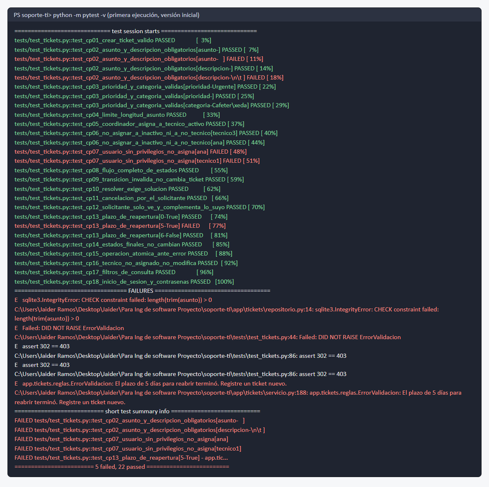<figcaption>Figura 8. Primera ejecución de las pruebas sobre la versión inicial: 22 pasan y 5 fallan.</figcaption></figure>
<figure>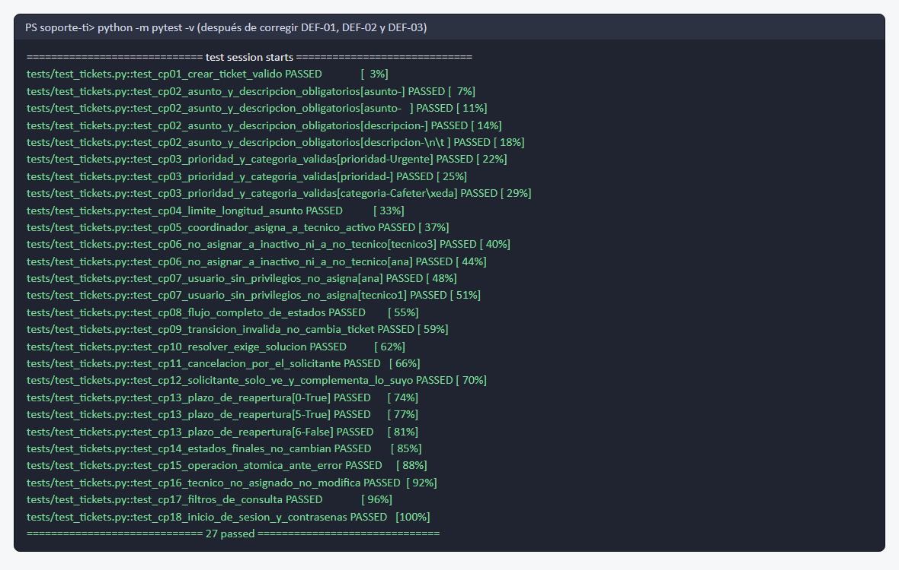<figcaption>Figura 9. Ejecución de regresión después de las correcciones: 27 de 27 pasan.</figcaption></figure>

<h3>4.2 Detalle de los casos de prueba</h3>
<p>Datos comunes para todos los casos: base de datos de prueba vacía con los usuarios de ejemplo (administrador, coordinadora, técnicos 1 y 2 activos, técnico 3 inactivo, solicitantes Ana y Luis). Cada prueba usa una base de datos nueva, así ninguna afecta a otra.</p>

<h4>CP-01 · Registrar un ticket válido</h4>
<div class="tabla"><table class="ficha"><tbody>
  <tr><th>Requisito o regla</th><td>RF-03, RF-04, RN-01, RN-04</td></tr>
  <tr><th>Objetivo</th><td>Comprobar que un ticket con datos correctos se guarda en estado Nuevo con un código único.</td></tr>
  <tr><th>Precondiciones</th><td>Ana y Luis tienen cuenta activa de solicitante.</td></tr>
  <tr><th>Datos de entrada</th><td>Asunto «La impresora del piso 2 no imprime», descripción, categoría Hardware, prioridad Media.</td></tr>
  <tr><th>Pasos</th><td>1. Ana registra el ticket. 2. Luis registra otro. 3. Se consultan ambos.</td></tr>
  <tr><th>Resultado esperado</th><td>Estado Nuevo, código con formato TK-000001, códigos distintos, solicitante y fecha registrados.</td></tr>
  <tr><th>Resultado obtenido</th><td>Igual al esperado.</td></tr>
  <tr><th>Estado</th><td><span class="estado paso">Pasó</span></td></tr>
  <tr><th>Evidencia</th><td><code>test_cp01_crear_ticket_valido</code> (figuras 8 y 9); figura 4.</td></tr>
</tbody></table></div>

<h4>CP-02 · Asunto y descripción obligatorios</h4>
<div class="tabla"><table class="ficha"><tbody>
  <tr><th>Requisito o regla</th><td>RN-02, RNF-10</td></tr>
  <tr><th>Objetivo</th><td>Verificar que no se aceptan asunto ni descripción vacíos o escritos solo con espacios.</td></tr>
  <tr><th>Precondiciones</th><td>Sesión de Ana.</td></tr>
  <tr><th>Datos de entrada</th><td>Asunto «» y «   » (tres espacios); descripción «» y un salto de línea con tabulación.</td></tr>
  <tr><th>Pasos</th><td>Intentar registrar el ticket con cada uno de los cuatro valores.</td></tr>
  <tr><th>Resultado esperado</th><td>Mensaje «El campo … es obligatorio» y ningún ticket guardado.</td></tr>
  <tr><th>Resultado obtenido</th><td>1.ª ejecución: los valores vacíos se rechazaron, pero el asunto con espacios provocó un error interno de la base de datos (no un mensaje claro) y la descripción con salto de línea se guardó en blanco. Después de la corrección: igual al esperado.</td></tr>
  <tr><th>Estado</th><td><span class="estado fallo">Falló</span> → DEF-02 → <span class="estado paso">Pasó</span></td></tr>
  <tr><th>Evidencia</th><td><code>test_cp02_asunto_y_descripcion_obligatorios</code> (figuras 8 y 9); figura 10.</td></tr>
</tbody></table></div>

<h4>CP-03 · Prioridad y categoría dentro de la lista</h4>
<div class="tabla"><table class="ficha"><tbody>
  <tr><th>Requisito o regla</th><td>RN-03, RNF-10</td></tr>
  <tr><th>Objetivo</th><td>Comprobar que solo se aceptan las prioridades Baja, Media, Alta y Crítica, y las categorías definidas.</td></tr>
  <tr><th>Precondiciones</th><td>Sesión de Ana.</td></tr>
  <tr><th>Datos de entrada</th><td>Prioridad «Urgente», prioridad vacía, categoría «Cafetería».</td></tr>
  <tr><th>Pasos</th><td>Intentar registrar un ticket con cada valor.</td></tr>
  <tr><th>Resultado esperado</th><td>Rechazo con mensaje que indica las opciones válidas.</td></tr>
  <tr><th>Resultado obtenido</th><td>Igual al esperado.</td></tr>
  <tr><th>Estado</th><td><span class="estado paso">Pasó</span></td></tr>
  <tr><th>Evidencia</th><td><code>test_cp03_prioridad_y_categoria_validas</code> (figuras 8 y 9).</td></tr>
</tbody></table></div>

<h4>CP-04 · Longitud máxima del asunto</h4>
<div class="tabla"><table class="ficha"><tbody>
  <tr><th>Requisito o regla</th><td>RNF-10 (valor límite)</td></tr>
  <tr><th>Objetivo</th><td>Comprobar el límite de 150 caracteres del asunto.</td></tr>
  <tr><th>Precondiciones</th><td>Sesión de Ana.</td></tr>
  <tr><th>Datos de entrada</th><td>Asunto de 150 caracteres y asunto de 151 caracteres.</td></tr>
  <tr><th>Pasos</th><td>Registrar un ticket con cada asunto.</td></tr>
  <tr><th>Resultado esperado</th><td>150 se acepta; 151 se rechaza con mensaje de máximo permitido.</td></tr>
  <tr><th>Resultado obtenido</th><td>Igual al esperado.</td></tr>
  <tr><th>Estado</th><td><span class="estado paso">Pasó</span></td></tr>
  <tr><th>Evidencia</th><td><code>test_cp04_limite_longitud_asunto</code> (figuras 8 y 9).</td></tr>
</tbody></table></div>

<h4>CP-05 · Asignación por la coordinadora</h4>
<div class="tabla"><table class="ficha"><tbody>
  <tr><th>Requisito o regla</th><td>RF-06, RN-06</td></tr>
  <tr><th>Objetivo</th><td>Comprobar que la coordinadora asigna un ticket Nuevo a un técnico activo.</td></tr>
  <tr><th>Precondiciones</th><td>Ticket de Ana en estado Nuevo; técnico 1 activo.</td></tr>
  <tr><th>Datos de entrada</th><td>Ticket creado, id del técnico 1.</td></tr>
  <tr><th>Pasos</th><td>La coordinadora asigna el ticket al técnico 1.</td></tr>
  <tr><th>Resultado esperado</th><td>Estado Asignado y técnico 1 como responsable.</td></tr>
  <tr><th>Resultado obtenido</th><td>Igual al esperado.</td></tr>
  <tr><th>Estado</th><td><span class="estado paso">Pasó</span></td></tr>
  <tr><th>Evidencia</th><td><code>test_cp05_coordinador_asigna_a_tecnico_activo</code>; figura 5.</td></tr>
</tbody></table></div>

<h4>CP-06 · No asignar a técnicos inactivos ni a otros roles</h4>
<div class="tabla"><table class="ficha"><tbody>
  <tr><th>Requisito o regla</th><td>RN-06</td></tr>
  <tr><th>Objetivo</th><td>Verificar que no se asigna a un técnico inactivo ni a un usuario que no es técnico.</td></tr>
  <tr><th>Precondiciones</th><td>Ticket Nuevo; técnico 3 inactivo.</td></tr>
  <tr><th>Datos de entrada</th><td>Id del técnico 3; id de Ana (solicitante).</td></tr>
  <tr><th>Pasos</th><td>El administrador intenta asignar el ticket a cada uno.</td></tr>
  <tr><th>Resultado esperado</th><td>Mensaje «Solo se puede asignar el ticket a un técnico activo»; el ticket sigue en Nuevo.</td></tr>
  <tr><th>Resultado obtenido</th><td>Igual al esperado.</td></tr>
  <tr><th>Estado</th><td><span class="estado paso">Pasó</span></td></tr>
  <tr><th>Evidencia</th><td><code>test_cp06_no_asignar_a_inactivo_ni_a_no_tecnico</code> (figuras 8 y 9).</td></tr>
</tbody></table></div>

<h4>CP-07 · Un usuario sin privilegios no puede asignar</h4>
<div class="tabla"><table class="ficha"><tbody>
  <tr><th>Requisito o regla</th><td>RN-06, RNF-04, SC-01</td></tr>
  <tr><th>Objetivo</th><td>Comprobar que el servidor rechaza la asignación aunque la petición se envíe directamente, sin usar el botón.</td></tr>
  <tr><th>Precondiciones</th><td>Ticket Nuevo; sesión iniciada como solicitante (Ana) o como técnico 1.</td></tr>
  <tr><th>Datos de entrada</th><td>Petición POST a <code>/tickets/&lt;id&gt;/asignar</code> con el id del técnico 1.</td></tr>
  <tr><th>Pasos</th><td>1. Iniciar sesión. 2. Enviar la petición directa. 3. Revisar el ticket.</td></tr>
  <tr><th>Resultado esperado</th><td>Respuesta 403 «Acceso no permitido»; el ticket sigue en Nuevo.</td></tr>
  <tr><th>Resultado obtenido</th><td>1.ª ejecución: el servidor aceptó la asignación (respuesta 302) y el ticket pasó a Asignado. El botón estaba oculto, pero el servidor no validaba el rol. Después de la corrección: igual al esperado.</td></tr>
  <tr><th>Estado</th><td><span class="estado fallo">Falló</span> → DEF-01 → <span class="estado paso">Pasó</span></td></tr>
  <tr><th>Evidencia</th><td><code>test_cp07_usuario_sin_privilegios_no_asigna</code> (figuras 8 y 9); figura 12.</td></tr>
</tbody></table></div>

<h4>CP-08 · Recorrido completo de estados</h4>
<div class="tabla"><table class="ficha"><tbody>
  <tr><th>Requisito o regla</th><td>RN-05, RF-07, RF-08, RF-10</td></tr>
  <tr><th>Objetivo</th><td>Verificar el camino normal Nuevo → Asignado → En progreso → Pendiente del solicitante → En progreso → Resuelto → Cerrado.</td></tr>
  <tr><th>Precondiciones</th><td>Ticket de Ana asignado al técnico 1.</td></tr>
  <tr><th>Datos de entrada</th><td>Comentario de pendiente, información complementaria de Ana, solución «Se actualizó el controlador».</td></tr>
  <tr><th>Pasos</th><td>El técnico avanza los estados, Ana complementa y finalmente cierra el ticket.</td></tr>
  <tr><th>Resultado esperado</th><td>El historial muestra los 7 estados en orden.</td></tr>
  <tr><th>Resultado obtenido</th><td>Igual al esperado.</td></tr>
  <tr><th>Estado</th><td><span class="estado paso">Pasó</span></td></tr>
  <tr><th>Evidencia</th><td><code>test_cp08_flujo_completo_de_estados</code>; figuras 6 y 7.</td></tr>
</tbody></table></div>

<h4>CP-09 · Transición inválida</h4>
<div class="tabla"><table class="ficha"><tbody>
  <tr><th>Requisito o regla</th><td>RN-05, RN-12</td></tr>
  <tr><th>Objetivo</th><td>Comprobar que un cambio no permitido se rechaza sin modificar el ticket.</td></tr>
  <tr><th>Precondiciones</th><td>Ticket en estado Asignado al técnico 1.</td></tr>
  <tr><th>Datos de entrada</th><td>Estado destino «Resuelto» y luego «Cerrado».</td></tr>
  <tr><th>Pasos</th><td>El técnico intenta cada cambio.</td></tr>
  <tr><th>Resultado esperado</th><td>Mensaje «No se puede pasar de Asignado a …»; el ticket sigue en Asignado.</td></tr>
  <tr><th>Resultado obtenido</th><td>Igual al esperado.</td></tr>
  <tr><th>Estado</th><td><span class="estado paso">Pasó</span></td></tr>
  <tr><th>Evidencia</th><td><code>test_cp09_transicion_invalida_no_cambia_ticket</code> (figuras 8 y 9).</td></tr>
</tbody></table></div>

<h4>CP-10 · Resolver exige descripción de la solución</h4>
<div class="tabla"><table class="ficha"><tbody>
  <tr><th>Requisito o regla</th><td>RN-08, RF-10</td></tr>
  <tr><th>Objetivo</th><td>Verificar que no se puede marcar Resuelto sin describir la solución.</td></tr>
  <tr><th>Precondiciones</th><td>Ticket En progreso asignado al técnico 1.</td></tr>
  <tr><th>Datos de entrada</th><td>Estado Resuelto con texto «   ».</td></tr>
  <tr><th>Pasos</th><td>El técnico intenta resolver sin solución.</td></tr>
  <tr><th>Resultado esperado</th><td>Mensaje «El campo Descripción de la solución es obligatorio»; sigue En progreso.</td></tr>
  <tr><th>Resultado obtenido</th><td>Igual al esperado.</td></tr>
  <tr><th>Estado</th><td><span class="estado paso">Pasó</span></td></tr>
  <tr><th>Evidencia</th><td><code>test_cp10_resolver_exige_solucion</code>; figura 11.</td></tr>
</tbody></table></div>

<h4>CP-11 · Cancelación por el solicitante</h4>
<div class="tabla"><table class="ficha"><tbody>
  <tr><th>Requisito o regla</th><td>RF-09, RN-07</td></tr>
  <tr><th>Objetivo</th><td>Comprobar que solo el dueño cancela, solo en estado Nuevo y con motivo.</td></tr>
  <tr><th>Precondiciones</th><td>Un ticket Nuevo de Ana y otro ya Asignado.</td></tr>
  <tr><th>Datos de entrada</th><td>Motivo vacío; motivo de Luis (no es el dueño); motivo válido de Ana.</td></tr>
  <tr><th>Pasos</th><td>1. Ana cancela sin motivo. 2. Luis intenta cancelar. 3. Ana cancela con motivo. 4. Ana intenta cancelar el ticket Asignado.</td></tr>
  <tr><th>Resultado esperado</th><td>1 rechazado, 2 sin permiso, 3 Cancelado, 4 rechazado y sigue Asignado.</td></tr>
  <tr><th>Resultado obtenido</th><td>Igual al esperado.</td></tr>
  <tr><th>Estado</th><td><span class="estado paso">Pasó</span></td></tr>
  <tr><th>Evidencia</th><td><code>test_cp11_cancelacion_por_el_solicitante</code> (figuras 8 y 9).</td></tr>
</tbody></table></div>

<h4>CP-12 · El solicitante solo ve y complementa lo suyo</h4>
<div class="tabla"><table class="ficha"><tbody>
  <tr><th>Requisito o regla</th><td>RF-08, RN-07, RF-13</td></tr>
  <tr><th>Objetivo</th><td>Verificar que un solicitante no accede a tickets ajenos ni complementa tickets cerrados.</td></tr>
  <tr><th>Precondiciones</th><td>Ticket de Luis; ticket cerrado de Ana.</td></tr>
  <tr><th>Datos de entrada</th><td>Dirección del ticket de Luis; texto complementario.</td></tr>
  <tr><th>Pasos</th><td>1. Ana abre el ticket de Luis. 2. Ana intenta complementarlo. 3. Ana lista sus tickets. 4. Ana intenta complementar su ticket cerrado.</td></tr>
  <tr><th>Resultado esperado</th><td>1 y 2 «Acceso no permitido» (403); 3 no muestra tickets ajenos; 4 rechazado.</td></tr>
  <tr><th>Resultado obtenido</th><td>Igual al esperado.</td></tr>
  <tr><th>Estado</th><td><span class="estado paso">Pasó</span></td></tr>
  <tr><th>Evidencia</th><td><code>test_cp12_solicitante_solo_ve_y_complementa_lo_suyo</code>; figuras 3 y 13.</td></tr>
</tbody></table></div>

<h4>CP-13 · Plazo de reapertura de 5 días</h4>
<div class="tabla"><table class="ficha"><tbody>
  <tr><th>Requisito o regla</th><td>RF-11, RN-09 (valores límite)</td></tr>
  <tr><th>Objetivo</th><td>Comprobar que un ticket se reabre hasta el quinto día calendario después de resuelto, y no el sexto.</td></tr>
  <tr><th>Precondiciones</th><td>Ticket resuelto el 1 de octubre de 2026 a las 9:00.</td></tr>
  <tr><th>Datos de entrada</th><td>Intentos de reapertura el día 0, el día 5 y el día 6.</td></tr>
  <tr><th>Pasos</th><td>Ana intenta reabrir en cada fecha.</td></tr>
  <tr><th>Resultado esperado</th><td>Día 0 y día 5: pasa a En progreso. Día 6: mensaje de plazo vencido y sigue Resuelto.</td></tr>
  <tr><th>Resultado obtenido</th><td>1.ª ejecución: el día 5 fue rechazado (el código contaba solo hasta el día 4). Después de la corrección: igual al esperado.</td></tr>
  <tr><th>Estado</th><td><span class="estado fallo">Falló</span> → DEF-03 → <span class="estado paso">Pasó</span></td></tr>
  <tr><th>Evidencia</th><td><code>test_cp13_plazo_de_reapertura</code> (figuras 8 y 9); figura 14.</td></tr>
</tbody></table></div>

<h4>CP-14 · Estados finales sin cambios</h4>
<div class="tabla"><table class="ficha"><tbody>
  <tr><th>Requisito o regla</th><td>RN-10, RN-12</td></tr>
  <tr><th>Objetivo</th><td>Verificar que los tickets Cerrados y Cancelados no cambian y conservan su historial.</td></tr>
  <tr><th>Precondiciones</th><td>Un ticket Cerrado y otro Cancelado.</td></tr>
  <tr><th>Datos de entrada</th><td>Intentos de reabrir, comentar y asignar.</td></tr>
  <tr><th>Pasos</th><td>Ejecutar cada intento sobre los dos tickets.</td></tr>
  <tr><th>Resultado esperado</th><td>Todos rechazados; estado y historial intactos.</td></tr>
  <tr><th>Resultado obtenido</th><td>Igual al esperado.</td></tr>
  <tr><th>Estado</th><td><span class="estado paso">Pasó</span></td></tr>
  <tr><th>Evidencia</th><td><code>test_cp14_estados_finales_no_cambian</code>; figura 7.</td></tr>
</tbody></table></div>

<h4>CP-15 · Sin cambios a medias ante un error</h4>
<div class="tabla"><table class="ficha"><tbody>
  <tr><th>Requisito o regla</th><td>RNF-05</td></tr>
  <tr><th>Objetivo</th><td>Comprobar que si falla el registro del historial, el cambio de estado también se deshace.</td></tr>
  <tr><th>Precondiciones</th><td>Ticket Nuevo.</td></tr>
  <tr><th>Datos de entrada</th><td>Se simula un error de «disco lleno» al guardar el historial.</td></tr>
  <tr><th>Pasos</th><td>La coordinadora asigna el ticket mientras el error simulado está activo.</td></tr>
  <tr><th>Resultado esperado</th><td>La operación falla y el ticket sigue en Nuevo, sin técnico.</td></tr>
  <tr><th>Resultado obtenido</th><td>Igual al esperado.</td></tr>
  <tr><th>Estado</th><td><span class="estado paso">Pasó</span></td></tr>
  <tr><th>Evidencia</th><td><code>test_cp15_operacion_atomica_ante_error</code> (figuras 8 y 9).</td></tr>
</tbody></table></div>

<h4>CP-16 · Un técnico no asignado no modifica el ticket</h4>
<div class="tabla"><table class="ficha"><tbody>
  <tr><th>Requisito o regla</th><td>RF-07, RN-11, RF-13</td></tr>
  <tr><th>Objetivo</th><td>Verificar que un técnico solo trabaja sobre los tickets que tiene asignados.</td></tr>
  <tr><th>Precondiciones</th><td>Ticket asignado al técnico 1.</td></tr>
  <tr><th>Datos de entrada</th><td>Cambio a En progreso y comentario hechos por el técnico 2.</td></tr>
  <tr><th>Pasos</th><td>El técnico 2 intenta cambiar el estado y comentar.</td></tr>
  <tr><th>Resultado esperado</th><td>Ambos rechazados por permisos; sigue Asignado.</td></tr>
  <tr><th>Resultado obtenido</th><td>Igual al esperado.</td></tr>
  <tr><th>Estado</th><td><span class="estado paso">Pasó</span></td></tr>
  <tr><th>Evidencia</th><td><code>test_cp16_tecnico_no_asignado_no_modifica</code> (figuras 8 y 9).</td></tr>
</tbody></table></div>

<h4>CP-17 · Filtros de consulta</h4>
<div class="tabla"><table class="ficha"><tbody>
  <tr><th>Requisito o regla</th><td>RF-05, RNF-10</td></tr>
  <tr><th>Objetivo</th><td>Comprobar los filtros por estado, categoría, prioridad y rango de fechas, y el rechazo de filtros mal escritos.</td></tr>
  <tr><th>Precondiciones</th><td>Tres tickets creados el 10, 20 y 25 de septiembre de 2026.</td></tr>
  <tr><th>Datos de entrada</th><td>Categoría Red; prioridad Alta; combinación de filtros; rango 15 al 25 de septiembre; fecha «15/09/2026»; estado «Perdido».</td></tr>
  <tr><th>Pasos</th><td>El técnico aplica cada filtro.</td></tr>
  <tr><th>Resultado esperado</th><td>2, 2, 1 y 2 resultados; las dos últimas entradas se rechazan con mensaje.</td></tr>
  <tr><th>Resultado obtenido</th><td>Igual al esperado.</td></tr>
  <tr><th>Estado</th><td><span class="estado paso">Pasó</span></td></tr>
  <tr><th>Evidencia</th><td><code>test_cp17_filtros_de_consulta</code>; figuras 2 y 15.</td></tr>
</tbody></table></div>

<h4>CP-18 · Inicio de sesión y contraseñas</h4>
<div class="tabla"><table class="ficha"><tbody>
  <tr><th>Requisito o regla</th><td>RF-01, RNF-03, RNF-07</td></tr>
  <tr><th>Objetivo</th><td>Verificar el ingreso correcto e incorrecto, que las contraseñas se guardan cifradas y que los errores no muestran detalles internos.</td></tr>
  <tr><th>Precondiciones</th><td>Usuarios de ejemplo; técnico 3 inactivo.</td></tr>
  <tr><th>Datos de entrada</th><td>Contraseña equivocada; cuenta inactiva; credenciales correctas; ticket inexistente 999999.</td></tr>
  <tr><th>Pasos</th><td>1. Ingresar con clave errada. 2. Ingresar con cuenta inactiva. 3. Revisar la contraseña guardada. 4. Ingresar bien y abrir un ticket que no existe. 5. Cerrar sesión.</td></tr>
  <tr><th>Resultado esperado</th><td>1 y 2: «Correo o contraseña incorrectos» sin decir cuál falló. 3: se guarda un hash, nunca el texto. 4: página «No encontrado» sin consultas SQL ni errores técnicos. 5: vuelve al inicio de sesión.</td></tr>
  <tr><th>Resultado obtenido</th><td>Igual al esperado.</td></tr>
  <tr><th>Estado</th><td><span class="estado paso">Pasó</span></td></tr>
  <tr><th>Evidencia</th><td><code>test_cp18_inicio_de_sesion_y_contrasenas</code>; figura 16.</td></tr>
</tbody></table></div>

<h3>4.3 Evidencias en la aplicación</h3>
<figure>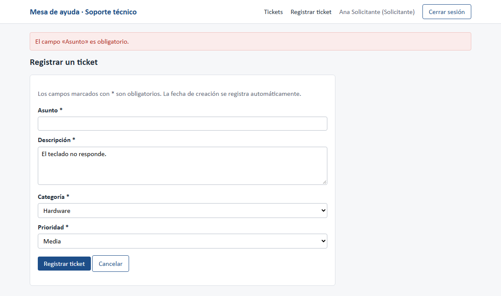<figcaption>Figura 10. Después de corregir DEF-02, un asunto con solo espacios muestra un mensaje claro (CP-02).</figcaption></figure>
<figure>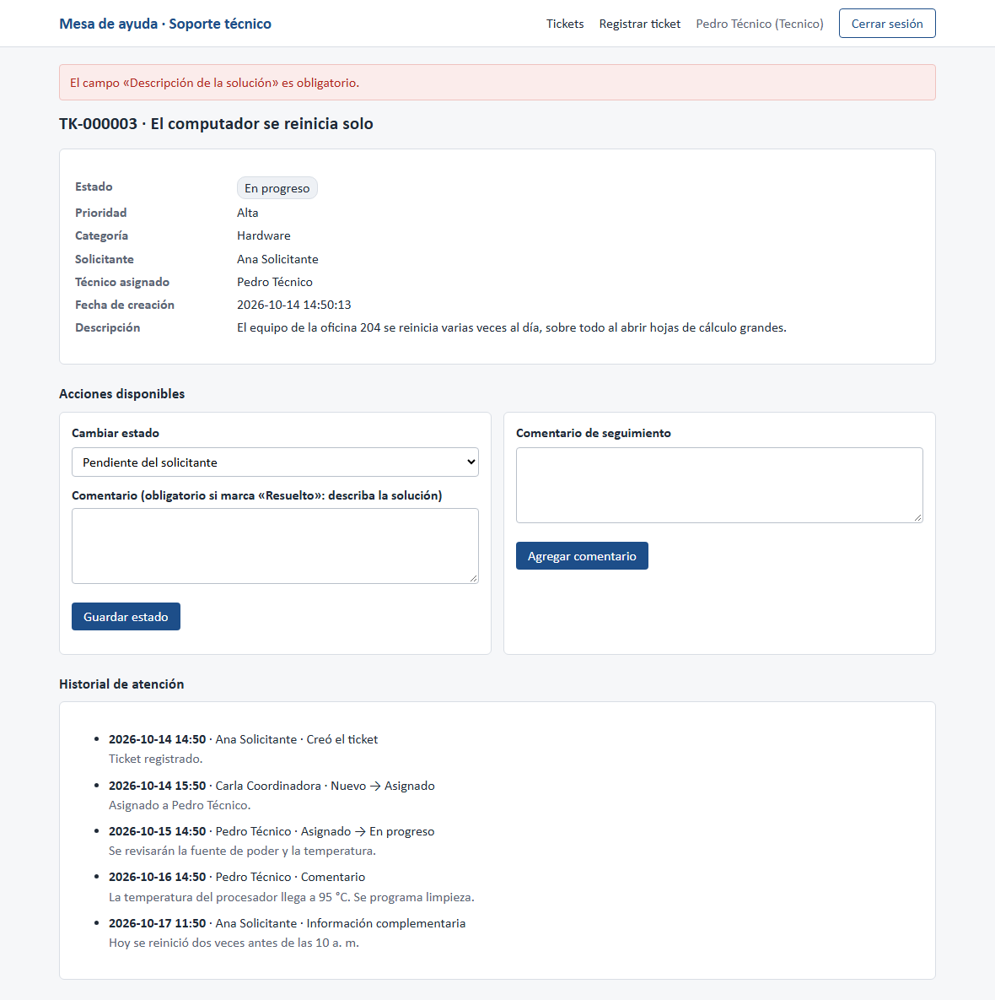<figcaption>Figura 11. El técnico no puede marcar Resuelto sin describir la solución (CP-10).</figcaption></figure>
<figure>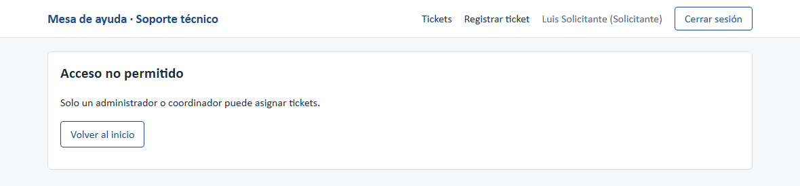<figcaption>Figura 12. Un solicitante que envía la petición de asignar recibe «Acceso no permitido» (CP-07, SC-01).</figcaption></figure>
<figure>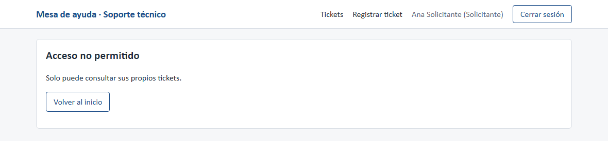<figcaption>Figura 13. Una solicitante no puede abrir el ticket de otra persona (CP-12).</figcaption></figure>
<figure>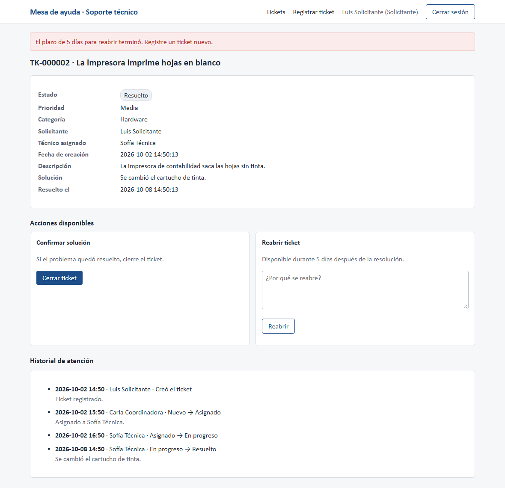<figcaption>Figura 14. Un ticket resuelto hace más de 5 días ya no se puede reabrir (CP-13).</figcaption></figure>
<figure>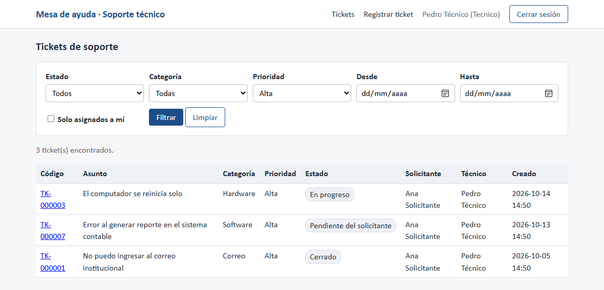<figcaption>Figura 15. Lista filtrada por prioridad Alta (CP-17).</figcaption></figure>
<figure>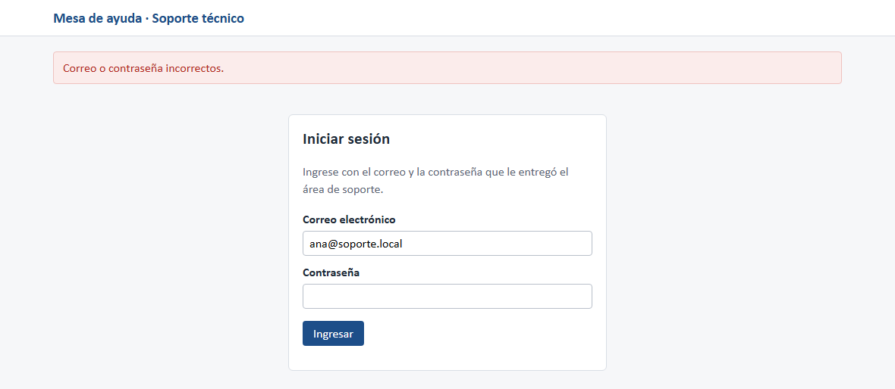<figcaption>Figura 16. Mensaje genérico ante credenciales incorrectas (CP-18).</figcaption></figure>

<h3>4.4 Registro de defectos</h3>
<div class="tabla"><table>
  <thead><tr><th>Defecto</th><th>Descripción</th><th>Detectado por</th><th>Gravedad</th><th>Causa</th><th>Corrección (rama y commit)</th><th>Nueva ejecución</th></tr></thead>
  <tbody>
    <tr><td>DEF-01</td><td>Cualquier usuario con sesión podía asignar tickets enviando la petición directamente.</td><td>CP-07</td><td>Alta (seguridad)</td><td>El botón estaba oculto en la página, pero la operación <code>asignar</code> no revisaba el rol en el servidor.</td><td>Se agregó la validación de rol al inicio de la operación. Rama <code>fix/DEF-01-asignacion-sin-permiso</code>, commit <code>6dfb6a9</code>.</td><td><span class="estado paso">Pasó</span> CP-07 y regresión completa</td></tr>
    <tr><td>DEF-02</td><td>Textos con solo espacios o saltos de línea se aceptaban como válidos.</td><td>CP-02</td><td>Media</td><td>La validación revisaba si el texto estaba vacío, pero no quitaba los espacios antes de revisar.</td><td>Se quitan los espacios antes de validar. Rama <code>fix/DEF-02-texto-con-espacios</code>, commit <code>5a2a13d</code>.</td><td><span class="estado paso">Pasó</span> CP-02, CP-04 y regresión completa</td></tr>
    <tr><td>DEF-03</td><td>No se permitía reabrir el ticket en el quinto día, aunque la regla lo permite.</td><td>CP-13</td><td>Media</td><td>La comparación usaba «menor que 5» en lugar de «menor o igual a 5».</td><td>Se corrigió la comparación. Rama <code>fix/DEF-03-plazo-reapertura</code>, commit <code>c310d6a</code>.</td><td><span class="estado paso">Pasó</span> CP-13 y regresión completa</td></tr>
  </tbody>
</table></div>

<h3>4.5 Prueba de rendimiento (RNF-06)</h3>
<p>El script <code>scripts/medir_rendimiento.py</code> carga el escenario pedido (500 usuarios y 30.000 tickets) y simula 10 usuarios consultando al mismo tiempo: filtros, rangos de fechas, «mis tickets» y detalle de un ticket. La consulta más lenta tardó 0,248 segundos, muy por debajo del máximo de 3 segundos. Esto se logra con índices en las columnas que se filtran y con paginación de 25 tickets por página.</p>
<figure>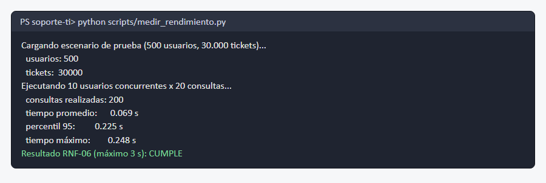<figcaption>Figura 17. Resultado de la medición de rendimiento: cumple RNF-06.</figcaption></figure>

<h2 id="mantenimiento">5. Mantenimiento y evolución</h2>
<p>Recordemos los cuatro tipos de mantenimiento: <strong>correctivo</strong> (arreglar un error), <strong>adaptativo</strong> (ajustar el sistema a un cambio del entorno, como un nuevo sistema operativo o una ley), <strong>perfectivo</strong> (agregar o mejorar funciones que piden los usuarios) y <strong>preventivo</strong> (mejorar el código para evitar problemas futuros).</p>

<h3>SC-01 · Asignación no autorizada</h3>
<div class="tabla"><table class="ficha"><tbody>
  <tr><th>Clasificación</th><td><strong>Correctivo</strong></td></tr>
  <tr><th>Justificación</th><td>El sistema no cumplía una regla que ya existía (RN-06 y RNF-04): un usuario sin privilegios podía asignar tickets. No se pide nada nuevo, se arregla un error.</td></tr>
  <tr><th>Requisitos afectados</th><td>RF-06, RF-13, RN-06, RN-12, RNF-04</td></tr>
  <tr><th>Componentes afectados</th><td>C3 Tickets (<code>servicio.py</code>, operación <code>asignar</code>). C1 Seguridad solo se consulta, no cambia.</td></tr>
  <tr><th>Cambios realizados</th><td>Este defecto apareció en nuestras pruebas como DEF-01 y ya está corregido. Al inicio de <code>asignar</code> se revisa que el usuario sea administrador o coordinador; si no lo es, se responde «Acceso no permitido» y el ticket no cambia.</td></tr>
  <tr><th>Pruebas de regresión</th><td>CP-07 (solicitante y técnico no pueden asignar, incluso con petición directa), CP-05 (la coordinadora sí puede), CP-06 (no se asigna a inactivos), CP-14 (estados finales) y la ejecución completa de los 18 casos.</td></tr>
</tbody></table></div>

<h3>SC-02 · Compromisos de atención por prioridad</h3>
<div class="tabla"><table class="ficha"><tbody>
  <tr><th>Clasificación</th><td><strong>Perfectivo</strong></td></tr>
  <tr><th>Justificación</th><td>Es una función nueva pedida por la organización para mejorar el servicio. No corrige un error ni responde a un cambio del entorno técnico.</td></tr>
  <tr><th>Requisitos afectados</th><td>RN-01 y RN-03 (el ticket tendrá plazos según prioridad), RF-05 (filtrar tickets vencidos), RF-12 (reportes de cumplimiento) y una regla nueva RN-13 con la tabla de plazos.</td></tr>
  <tr><th>Componentes afectados</th><td>C3 Tickets, C4 Reportes, C5 Datos (nuevas columnas).</td></tr>
  <tr><th>Cambios propuestos</th><td>
    <ul>
      <li>En <code>reglas.py</code>, una tabla de plazos. Ejemplo: Crítica 1 h de atención y 8 h de resolución; Alta 4 h y 24 h; Media 8 h y 72 h; Baja 24 h y 120 h (la organización define los valores finales).</li>
      <li>En la tabla de tickets, dos columnas: fecha límite de atención y fecha límite de resolución, calculadas al registrar el ticket.</li>
      <li>En la lista y el detalle, un indicador «A tiempo / Por vencer / Vencido», y un filtro de vencidos.</li>
      <li>En Reportes, el porcentaje de tickets atendidos y resueltos a tiempo por periodo, categoría y técnico.</li>
    </ul></td></tr>
  <tr><th>Pruebas de regresión</th><td>Repetir CP-01, CP-03, CP-08 y CP-17. Pruebas nuevas: plazo correcto para cada prioridad; valores límite (vence justo en el minuto límite); recálculo si cambia la prioridad; los tickets Pendiente del solicitante no cuentan tiempo contra el técnico.</td></tr>
</tbody></table></div>

<h3>SC-03 · Encuesta de satisfacción</h3>
<div class="tabla"><table class="ficha"><tbody>
  <tr><th>Clasificación</th><td><strong>Perfectivo</strong></td></tr>
  <tr><th>Justificación</th><td>Agrega una función nueva que mejora el servicio y da información para medir la calidad de la atención.</td></tr>
  <tr><th>Requisitos afectados</th><td>RF-08 (el solicitante podrá responder la encuesta de sus tickets), RF-12 (reporte de satisfacción), RF-13 (solo el dueño la responde) y una regla nueva RN-14: una sola encuesta por ticket, después de Resuelto, con calificación de 1 a 5 y comentario opcional.</td></tr>
  <tr><th>Componentes afectados</th><td>Nuevo componente C7 Satisfacción, que depende de C3 Tickets en modo solo lectura. C4 Reportes agrega un reporte. C5 Datos agrega la tabla de encuestas. Tickets no necesita cambios, lo que muestra el bajo acoplamiento.</td></tr>
  <tr><th>Cambios propuestos</th><td>
    <ul>
      <li>Tabla <code>encuestas</code> con ticket, calificación, comentario y fecha.</li>
      <li>Cuando el ticket queda Resuelto o Cerrado, el solicitante ve el formulario «¿Cómo calificaría la atención?».</li>
      <li>Validación de calificación entre 1 y 5 y de una sola respuesta por ticket.</li>
      <li>Reporte de satisfacción promedio por técnico y categoría.</li>
    </ul></td></tr>
  <tr><th>Pruebas de regresión</th><td>Repetir CP-08, CP-12, CP-13 y CP-14. Pruebas nuevas: calificación 0 y 6 rechazadas, 1 y 5 aceptadas; segunda encuesta rechazada; otro usuario no puede responder; un ticket En progreso no permite encuesta.</td></tr>
</tbody></table></div>

<h2 id="git-ia">6. Git y uso de inteligencia artificial</h2>

<h3>6.1 Repositorio y organización</h3>
<p>El repositorio <code>soporte-ti</code> contiene el código, las pruebas, los scripts, las evidencias y este informe. El archivo <code>README.md</code> explica cómo instalar, configurar, ejecutar y respaldar la aplicación (RNF-09).</p>

<h3>6.2 Estrategia de ramas</h3>
<div class="tabla"><table>
  <thead><tr><th>Rama</th><th>Para qué se usó</th></tr></thead>
  <tbody>
    <tr><td><code>main</code></td><td>Versión estable y entregable. Solo recibe merges desde <code>develop</code>.</td></tr>
    <tr><td><code>develop</code></td><td>Rama de integración donde se unen las funcionalidades terminadas.</td></tr>
    <tr><td><code>feature/base-datos-y-sesion</code></td><td>Base de datos, tablas, inicio de sesión y comandos de inicio y respaldo.</td></tr>
    <tr><td><code>feature/modulo-tickets</code></td><td>Reglas, consultas, servicio y páginas del Módulo de Tickets.</td></tr>
    <tr><td><code>feature/casos-de-prueba</code></td><td>Los 18 casos de prueba y la evidencia de la primera ejecución.</td></tr>
    <tr><td><code>fix/DEF-01-…</code>, <code>fix/DEF-02-…</code>, <code>fix/DEF-03-…</code></td><td>Una rama por cada defecto encontrado.</td></tr>
    <tr><td><code>fix/nombre-de-rol-con-tilde</code></td><td>Pequeña mejora de texto en la interfaz.</td></tr>
    <tr><td><code>feature/rendimiento-y-respaldo</code></td><td>Script de rendimiento y evidencias.</td></tr>
    <tr><td><code>docs/informe-y-evidencias</code></td><td>Capturas, informe y guía de defensa.</td></tr>
  </tbody>
</table></div>
<p>Cada rama se integró con <code>git merge --no-ff</code>, que deja un commit de merge visible en el historial. Los mensajes de commit están en español y dicen qué cambió y por qué, por ejemplo: «Corrige DEF-01: el servidor rechaza asignaciones de usuarios que no son administrador o coordinador».</p>
<figure>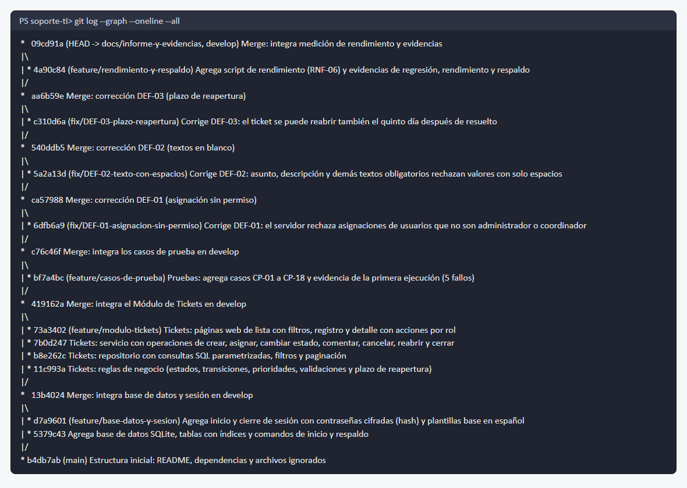<figcaption>Figura 18. Historial del repositorio con ramas y merges (<code>git log --graph</code>).</figcaption></figure>
<figure>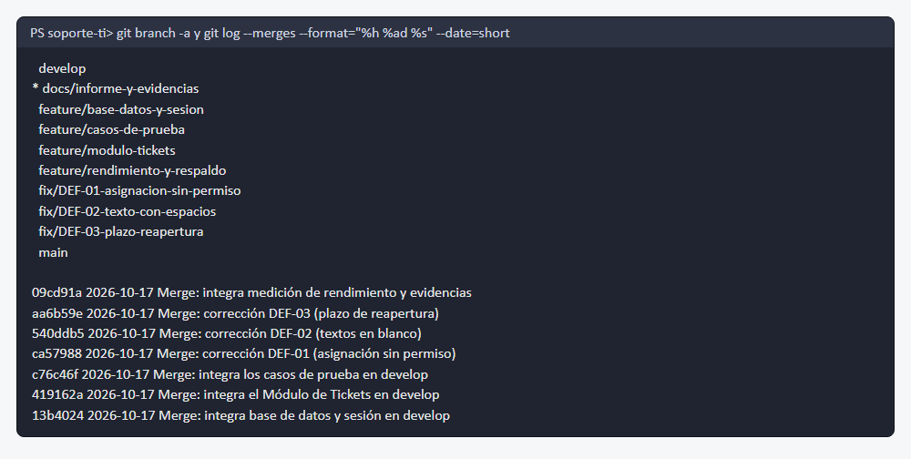<figcaption>Figura 19. Ramas del repositorio y lista de merges realizados.</figcaption></figure>

<h3>6.3 Herramienta de inteligencia artificial</h3>
<p>Usamos <strong>Claude Code</strong> de Anthropic (modelo Claude Opus 5.5) dentro de Visual Studio Code. La herramienta puede leer los archivos del proyecto, escribir código, ejecutar comandos como las pruebas y Git, y explicar lo que hace. Los commits generados con su ayuda llevan la línea <code>Co-Authored-By: Claude</code>, lo que deja trazabilidad del apoyo de la IA.</p>
<h4>Para qué se usó</h4>
<ul>
  <li><strong>Generar:</strong> estructura del proyecto, tablas, reglas de negocio, servicio, páginas y casos de prueba a partir de los requisitos del enunciado.</li>
  <li><strong>Revisar:</strong> ejecutar las pruebas, leer los fallos y explicar la causa de cada uno.</li>
  <li><strong>Corregir:</strong> proponer y aplicar la corrección de cada defecto en su propia rama, y volver a ejecutar las pruebas.</li>
  <li><strong>Documentar:</strong> README, capturas y este informe.</li>
</ul>

<h4>Prompts representativos</h4>
<p>Prompt inicial, tal como se escribió:</p>
<div class="prompt">Analiza el siguiente documento y genera el proyecto que nos pide el docente, debe estar todo alojado en una página web en donde visualizaremos y modificaremos en caso de requerirlo. Genera un archivo modificable por vía web todo lo que solicita el docente con capturas requeridas. No usar niveles tan técnicos en las palabras, usar un tono moderado. Al final en archivo aparte indica cómo defender dicho proyecto. […] formato de Calibri 12 […]</div>
<p class="nota">Los siguientes prompts sirven para continuar o repetir el trabajo con la herramienta. Si el equipo usa otros prompts durante el proyecto, agréguelos aquí.</p>
<div class="prompt">Implementa solo el Módulo de Tickets con Flask y SQLite. Separa reglas de negocio, consultas SQL, servicio y rutas. Los permisos deben validarse en el servidor y cada cambio de estado debe guardarse junto con su historial en una sola transacción.</div>
<div class="prompt">Escribe al menos 12 casos de prueba con pytest para RN-01 a RN-12: casos normales, entradas inválidas, valores límite (150/151 caracteres, reapertura el día 5 y el 6), transiciones inválidas y permisos por rol.</div>
<div class="prompt">Ejecuta las pruebas. Por cada fallo explícame la causa en palabras sencillas, crea una rama fix/DEF-XX, corrige solo ese defecto y vuelve a ejecutar todo el conjunto.</div>

<h4>Ajustes hechos al código</h4>
<div class="tabla"><table>
  <thead><tr><th>Ajuste</th><th>Motivo</th></tr></thead>
  <tbody>
    <tr><td>Validación de rol en <code>asignar</code> (DEF-01)</td><td>La primera versión solo ocultaba el botón. Las pruebas mostraron que eso no basta (RNF-04).</td></tr>
    <tr><td>Quitar espacios antes de validar textos (DEF-02)</td><td>Un asunto «en blanco» terminaba en un error interno de la base de datos en vez de un mensaje claro.</td></tr>
    <tr><td>Comparación del plazo de reapertura (DEF-03)</td><td>El quinto día quedaba por fuera, contrario a RN-09.</td></tr>
    <tr><td>Ayudante de pruebas <code>nuevo_ticket</code></td><td>La primera versión enviaba la fecha dentro de los datos del ticket; se cambió para pasarla aparte y así probar los filtros por fecha.</td></tr>
    <tr><td>Rol con tilde en la barra superior</td><td>La interfaz mostraba «Tecnico»; se ajustó para cumplir RNF-01.</td></tr>
  </tbody>
</table></div>

<h4>Verificación y responsabilidad del equipo</h4>
<p>Todo el código generado se verificó con los 18 casos de prueba, con la prueba de rendimiento y revisando las pantallas una por una. El equipo leyó cada archivo y puede explicar cómo funciona. La IA aceleró el trabajo, pero las decisiones de diseño, la revisión de los requisitos y la validación final son responsabilidad del equipo.</p>

<h2 id="conclusiones">7. Conclusiones</h2>
<ul>
  <li>Dividir el sistema en seis componentes con una sola responsabilidad cada uno nos permitió implementar el Módulo de Tickets sin depender de los módulos que quedaron solo documentados.</li>
  <li>Separar las reglas de negocio en un archivo propio hizo que las pruebas fueran sencillas y que los cambios futuros, como los plazos por prioridad, tengan un lugar claro.</li>
  <li>Las pruebas encontraron tres defectos reales que a simple vista no se notaban. El más grave, que cualquier usuario pudiera asignar tickets, es justamente el caso de la solicitud SC-01: ocultar un botón no es suficiente; el servidor debe validar los permisos.</li>
  <li>Las pruebas de valor límite (día 5 y día 6; 150 y 151 caracteres) son las que más errores encuentran, porque ahí es donde se confunden «menor que» y «menor o igual que».</li>
  <li>Trabajar con ramas por funcionalidad y por defecto dejó un historial claro y fácil de revisar.</li>
  <li>La inteligencia artificial fue una ayuda importante para generar y corregir código, pero solo es confiable cuando se acompaña de pruebas y de la revisión del equipo.</li>
</ul>

<h2 id="repositorio">8. Enlace al repositorio</h2>
<p>Repositorio Git: <span class="pendiente">[Pegar aquí el enlace de GitHub]</span></p>
<p>Versión entregada: etiqueta <code>v1.0.0</code> en la rama <code>main</code>.</p>

<h2 id="anexos">9. Anexos</h2>

<h3>Anexo A. Instalación, ejecución y respaldo</h3>
<div class="tabla"><table>
  <thead><tr><th>Paso</th><th>Comando</th></tr></thead>
  <tbody>
    <tr><td>Descargar el proyecto</td><td><code>git clone &lt;enlace&gt;</code> y <code>cd soporte-ti</code></td></tr>
    <tr><td>Crear el entorno</td><td><code>python -m venv .venv</code> y activarlo (<code>.venv\Scripts\activate</code> en Windows)</td></tr>
    <tr><td>Instalar dependencias</td><td><code>pip install -r requirements.txt</code></td></tr>
    <tr><td>Crear la base de datos</td><td><code>flask --app app iniciar-bd</code></td></tr>
    <tr><td>Ejecutar</td><td><code>flask --app app run</code> y abrir http://127.0.0.1:5000</td></tr>
    <tr><td>Ejecutar las pruebas</td><td><code>python -m pytest -v</code></td></tr>
    <tr><td>Medir rendimiento</td><td><code>python scripts/medir_rendimiento.py</code></td></tr>
    <tr><td>Respaldar los datos</td><td><code>flask --app app respaldar-bd</code> (crea una copia en la carpeta <code>respaldos</code>)</td></tr>
    <tr><td>Restaurar</td><td>Detener la aplicación y copiar el respaldo elegido sobre <code>instance/soporte.db</code></td></tr>
  </tbody>
</table></div>
<figure>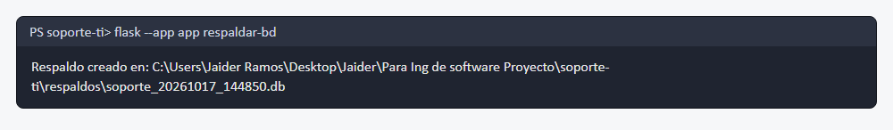<figcaption>Figura 20. Creación de un respaldo de la base de datos.</figcaption></figure>

<h3>Anexo B. Usuarios de prueba</h3>
<p>Contraseña para todos: <code>Soporte2026*</code></p>
<div class="tabla"><table>
  <thead><tr><th>Correo</th><th>Rol</th></tr></thead>
  <tbody>
    <tr><td>admin@soporte.local</td><td>Administrador</td></tr>
    <tr><td>coordinador@soporte.local</td><td>Coordinador</td></tr>
    <tr><td>tecnico1@soporte.local · tecnico2@soporte.local</td><td>Técnico (activo)</td></tr>
    <tr><td>tecnico3@soporte.local</td><td>Técnico (inactivo)</td></tr>
    <tr><td>ana@soporte.local · luis@soporte.local</td><td>Solicitante</td></tr>
  </tbody>
</table></div>

<h3>Anexo C. Trazabilidad de requisitos</h3>
<div class="tabla"><table>
  <thead><tr><th>Requisito o regla</th><th>Componente</th><th>Dónde se cumple</th><th>Casos de prueba</th></tr></thead>
  <tbody>
    <tr><td>RF-01</td><td>C1</td><td><code>autenticacion.py</code></td><td>CP-18</td></tr>
    <tr><td>RF-02</td><td>C2</td><td>Documentado, no implementado</td><td>—</td></tr>
    <tr><td>RF-03, RF-04</td><td>C3</td><td><code>servicio.crear</code>, <code>repositorio.insertar_ticket</code></td><td>CP-01 a CP-04</td></tr>
    <tr><td>RF-05</td><td>C3</td><td><code>servicio.listar</code>, página de lista</td><td>CP-17</td></tr>
    <tr><td>RF-06, RN-06</td><td>C3</td><td><code>servicio.asignar</code></td><td>CP-05, CP-06, CP-07</td></tr>
    <tr><td>RF-07</td><td>C3</td><td><code>servicio.cambiar_estado</code>, <code>servicio.comentar</code></td><td>CP-08, CP-16</td></tr>
    <tr><td>RF-08, RN-07</td><td>C3</td><td><code>servicio.complementar</code>, <code>servicio.consultar</code></td><td>CP-08, CP-12</td></tr>
    <tr><td>RF-09</td><td>C3</td><td><code>servicio.cancelar</code></td><td>CP-11</td></tr>
    <tr><td>RF-10, RN-08</td><td>C3</td><td><code>servicio.cambiar_estado</code> (Resuelto)</td><td>CP-08, CP-10</td></tr>
    <tr><td>RF-11, RN-09</td><td>C3</td><td><code>servicio.reabrir</code>, <code>reglas.puede_reabrir</code></td><td>CP-13</td></tr>
    <tr><td>RF-12</td><td>C4</td><td>Documentado, no implementado</td><td>—</td></tr>
    <tr><td>RF-13, RNF-04</td><td>C1, C3</td><td>Validaciones de rol en cada operación del servicio</td><td>CP-07, CP-11, CP-12, CP-16</td></tr>
    <tr><td>RN-01 a RN-05</td><td>C3</td><td><code>reglas.py</code> y restricciones de la tabla</td><td>CP-01, CP-03, CP-08, CP-09</td></tr>
    <tr><td>RN-10, RN-12</td><td>C3</td><td>Estados finales y validación previa a cada cambio</td><td>CP-09, CP-14</td></tr>
    <tr><td>RNF-01, RNF-02</td><td>C6</td><td>Plantillas en español, HTML estándar</td><td>Revisión visual (figuras 1 a 7)</td></tr>
    <tr><td>RNF-03, RNF-07</td><td>C1, C6</td><td>Hash de contraseñas; páginas de error genéricas</td><td>CP-18</td></tr>
    <tr><td>RNF-05</td><td>C5</td><td>Transacciones en cada operación</td><td>CP-15</td></tr>
    <tr><td>RNF-06</td><td>C5</td><td>Índices y paginación</td><td>Prueba de rendimiento (figura 17)</td></tr>
    <tr><td>RNF-08, RNF-09</td><td>C5</td><td>Base de datos en archivo; README y comando de respaldo</td><td>Anexo A</td></tr>
    <tr><td>RNF-10</td><td>C3</td><td><code>reglas.validar_texto</code>, <code>validar_opcion</code></td><td>CP-02, CP-03, CP-04, CP-17</td></tr>
  </tbody>
</table></div>

</article>
<script id="motor">(function () {
  "use strict";
  var doc = document.getElementById("doc");
  if (!doc) return;
  var RESET = ":root{color-scheme:light;padding-top:env(safe-area-inset-top,0px);padding-bottom:env(safe-area-inset-bottom,0px)}body{margin:0;font-size:14px;font-family:system-ui,sans-serif}img{max-width:100%}[hidden]{display:none!important}";
  var CLAVE = "borrador:" + document.title;
  var original = doc.innerHTML;
  var artefacto = null;
  var editando = false;
  var temporizador = null;

  function leer() { try { return localStorage.getItem(CLAVE); } catch (e) { return null; } }
  function escribir(v) { try { if (v === null) localStorage.removeItem(CLAVE); else localStorage.setItem(CLAVE, v); } catch (e) {} }

  var barra = document.createElement("div");
  barra.className = "herramientas";
  barra.setAttribute("role", "toolbar");
  barra.setAttribute("aria-label", "Edición del documento");
  barra.innerHTML =
    '<button type="button" class="principal" data-accion="editar">Editar documento</button>' +
    '<span class="grupo" data-modo="edicion" hidden>' +
      '<button type="button" data-cmd="bold" title="Negrita"><b>N</b></button>' +
      '<button type="button" data-cmd="italic" title="Cursiva"><i>K</i></button>' +
      '<button type="button" data-bloque="h2">Título</button>' +
      '<button type="button" data-bloque="h3">Subtítulo</button>' +
      '<button type="button" data-bloque="p">Párrafo</button>' +
      '<button type="button" data-cmd="insertUnorderedList">Viñetas</button>' +
      '<button type="button" data-accion="fila">Agregar fila</button>' +
      '<button type="button" class="principal" data-accion="guardar">Guardar cambios</button>' +
      '<button type="button" data-accion="descartar">Descartar</button>' +
    '</span>' +
    '<span class="estado-guardado" aria-live="polite"></span>';
  var estado = barra.querySelector(".estado-guardado");
  var grupo = barra.querySelector("[data-modo=edicion]");
  var botonEditar = barra.querySelector("[data-accion=editar]");
  var selector = document.createElement("input");
  selector.type = "file";
  selector.accept = "image/*";
  selector.hidden = true;
  var imagenObjetivo = null;

  function aviso(texto) { estado.textContent = texto; }

  function modoEdicion(activo) {
    editando = activo;
    doc.contentEditable = activo ? "true" : "false";
    document.body.classList.toggle("editando", activo);
    grupo.hidden = !activo;
    botonEditar.hidden = activo;
    aviso(activo ? "Modo edición: escriba sobre el texto. Haga clic en una imagen para cambiarla." : "");
    if (activo) doc.focus();
  }

  function documentoLimpio() {
    var copia = doc.cloneNode(true);
    copia.removeAttribute("contenteditable");
    copia.querySelectorAll("*").forEach(function (el) {
      Array.prototype.slice.call(el.attributes).forEach(function (a) {
        if (a.name === "contenteditable" || a.name === "spellcheck" || a.name === "data-id" || a.name.indexOf("artifact-") === 0) el.removeAttribute(a.name);
      });
    });
    return copia;
  }

  function paginaCompleta() {
    var estilo = document.getElementById("estilo").textContent;
    var fuente = document.getElementById("fuente-letra");
    var motor = document.getElementById("motor").textContent;
    var titulo = document.title.replace(/&/g, "&amp;").replace(/</g, "&lt;");
    var cierre = "</" + "script>";
    return "<!doctype html><html><head><meta charset=utf8><meta name=viewport content=\"width=device-width,initial-scale=1,viewport-fit=cover\"><style>" + RESET + "</style></head><body>" +
      "<title>" + titulo + "</title>" +
      "<meta name=\"claude:viewport-fit-sides\" content=\"cover\">" +
      (fuente ? "<link id=\"fuente-letra\" rel=\"stylesheet\" href=\"" + fuente.getAttribute("href") + "\">" : "") +
      "<style id=\"estilo\">" + estilo + "</style>" +
      documentoLimpio().outerHTML +
      "<script id=\"motor\">" + motor + cierre +
      "</body></html>";
  }

  function guardarBorrador() {
    clearTimeout(temporizador);
    temporizador = setTimeout(function () { escribir(doc.innerHTML); aviso("Borrador guardado en este navegador. Use «Guardar cambios» para publicarlo."); }, 800);
  }

  function guardar() {
    if (!artefacto) { aviso("Guardar no está disponible en esta vista."); return; }
    escribir(doc.innerHTML);
    aviso("Guardando…");
    artefacto.publish(paginaCompleta()).then(function () {
      escribir(null);
      aviso("Cambios guardados. La página se actualizará.");
    }, function (error) {
      var codigo = error && error.code;
      if (codigo === "conflict") aviso("Otra persona guardó una versión más reciente. Su borrador quedó guardado en este navegador.");
      else if (codigo === "not_writer" || codigo === "not_granted" || codigo === "consent_required" || codigo === "capability_disabled") {
        aviso("Esta vista es de solo lectura; no se pueden guardar cambios.");
        modoEdicion(false);
        botonEditar.hidden = true;
      } else if (codigo === "too_large") aviso("El documento es demasiado grande para guardarlo. Use imágenes más livianas.");
      else if (codigo === "rate_limited") aviso("Se guardó muchas veces seguidas. Espere un momento y vuelva a intentarlo.");
      else aviso("No se pudo guardar en este momento. Su borrador quedó en este navegador; intente de nuevo.");
    });
  }

  function agregarFila() {
    var sel = window.getSelection();
    var nodo = sel && sel.anchorNode;
    var fila = nodo && (nodo.nodeType === 1 ? nodo : nodo.parentElement).closest("tr");
    if (!fila || !doc.contains(fila)) { aviso("Ubique el cursor dentro de una fila de la tabla y vuelva a pulsar «Agregar fila»."); return; }
    var nueva = fila.cloneNode(true);
    nueva.querySelectorAll("td, th").forEach(function (c) { c.textContent = ""; });
    fila.parentNode.insertBefore(nueva, fila.nextSibling);
    guardarBorrador();
  }

  barra.addEventListener("mousedown", function (e) { if (e.target.closest("[data-cmd],[data-bloque]")) e.preventDefault(); });
  barra.addEventListener("click", function (e) {
    var b = e.target.closest("button");
    if (!b) return;
    if (b.dataset.cmd) { document.execCommand(b.dataset.cmd, false, null); guardarBorrador(); return; }
    if (b.dataset.bloque) { document.execCommand("formatBlock", false, b.dataset.bloque); guardarBorrador(); return; }
    var accion = b.dataset.accion;
    if (accion === "editar") modoEdicion(true);
    else if (accion === "guardar") guardar();
    else if (accion === "fila") agregarFila();
    else if (accion === "descartar") { doc.innerHTML = original; escribir(null); modoEdicion(false); aviso("Cambios descartados."); }
  });

  doc.addEventListener("input", function () { if (editando) guardarBorrador(); });
  doc.addEventListener("click", function (e) {
    if (!editando || e.target.tagName !== "IMG") return;
    imagenObjetivo = e.target;
    selector.value = "";
    selector.click();
  });
  selector.addEventListener("change", function () {
    var archivo = selector.files && selector.files[0];
    if (!archivo || !imagenObjetivo) return;
    var lector = new FileReader();
    lector.onload = function () {
      var img = new Image();
      img.onload = function () {
        var escala = Math.min(1, 1400 / img.width);
        var lienzo = document.createElement("canvas");
        lienzo.width = Math.round(img.width * escala);
        lienzo.height = Math.round(img.height * escala);
        lienzo.getContext("2d").drawImage(img, 0, 0, lienzo.width, lienzo.height);
        imagenObjetivo.src = lienzo.toDataURL("image/png");
        imagenObjetivo.removeAttribute("width");
        imagenObjetivo.removeAttribute("height");
        guardarBorrador();
      };
      img.src = lector.result;
    };
    lector.readAsDataURL(archivo);
  });

  var pendiente = leer();
  if (pendiente && pendiente !== original) {
    var banda = document.createElement("div");
    banda.className = "aviso-borrador";
    banda.innerHTML = '<span>Hay cambios sin publicar guardados en este navegador.</span>' +
      '<button type="button" data-r="si">Recuperar</button><button type="button" data-r="no">Descartar borrador</button>';
    banda.addEventListener("click", function (e) {
      var r = e.target.closest("button");
      if (!r) return;
      if (r.dataset.r === "si") { doc.innerHTML = pendiente; modoEdicion(true); }
      else escribir(null);
      banda.remove();
    });
    doc.parentNode.insertBefore(banda, doc);
  }

  var claude = window.claude;
  if (claude && typeof claude.use === "function") {
    claude.use("artifact").then(function (ns) {
      if (!ns) return;
      artefacto = ns;
      document.body.appendChild(barra);
      document.body.appendChild(selector);
    }, function () {});
  }
})();
</script>
